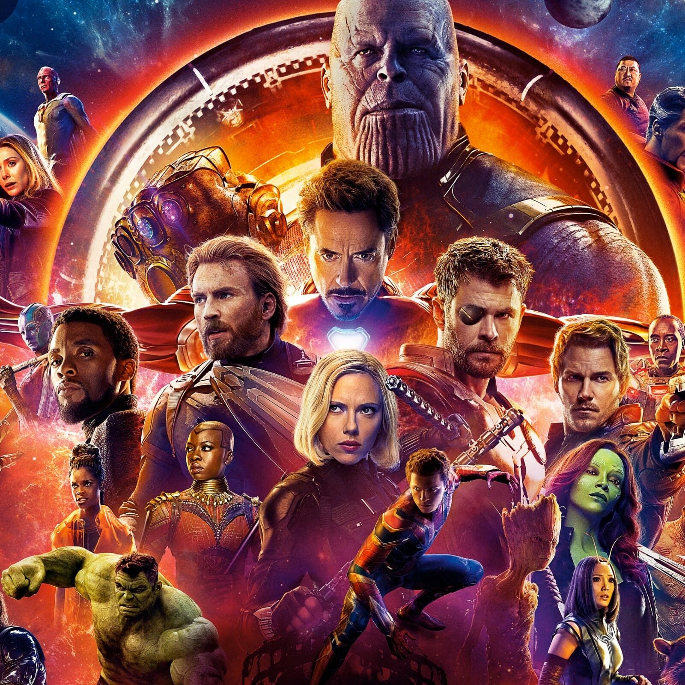
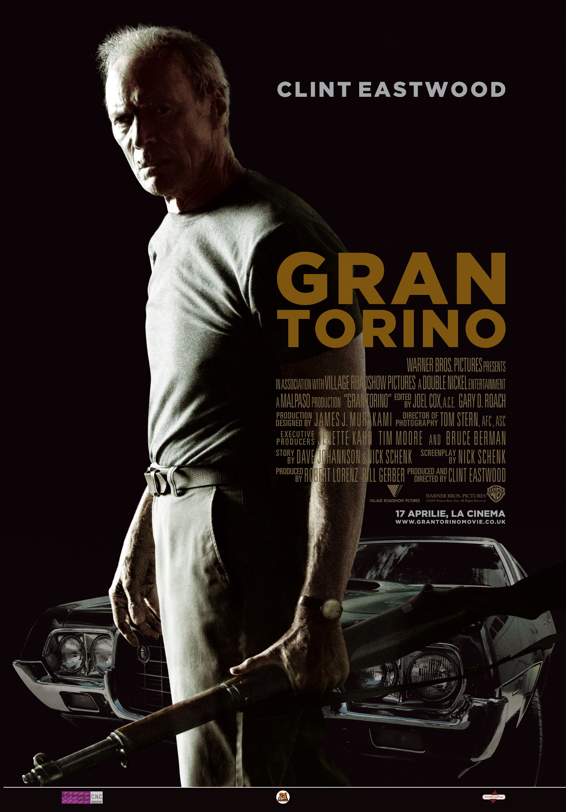
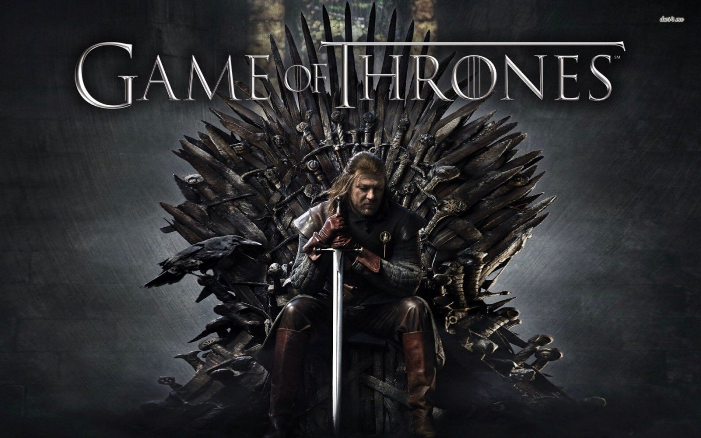
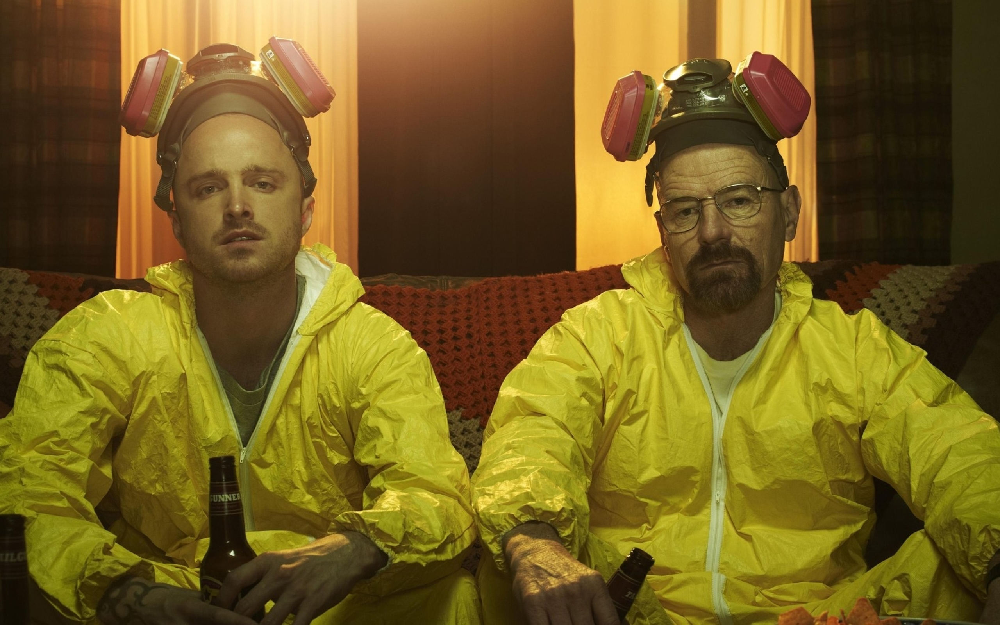
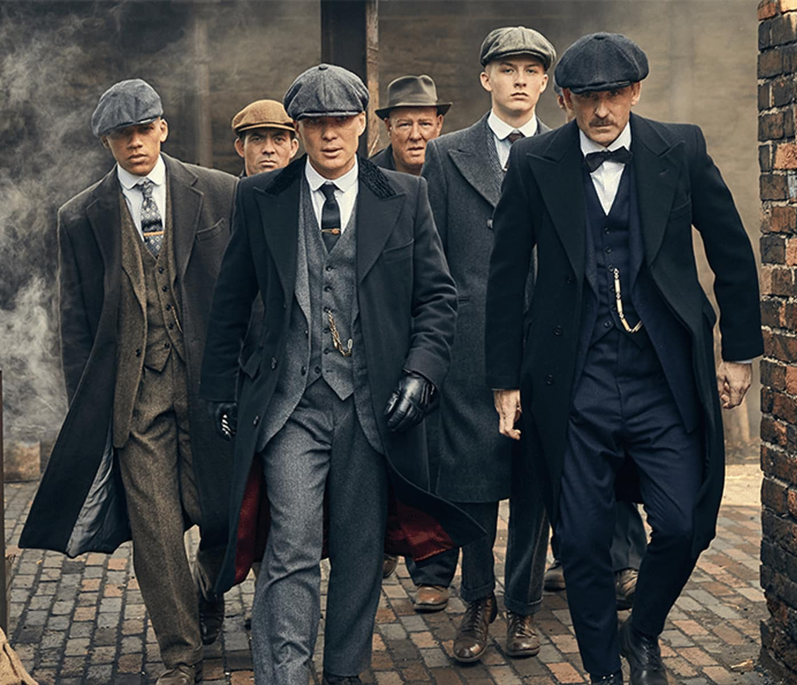
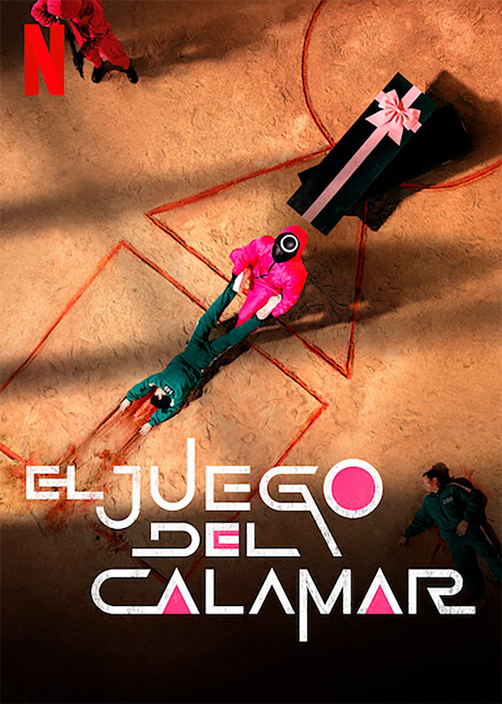
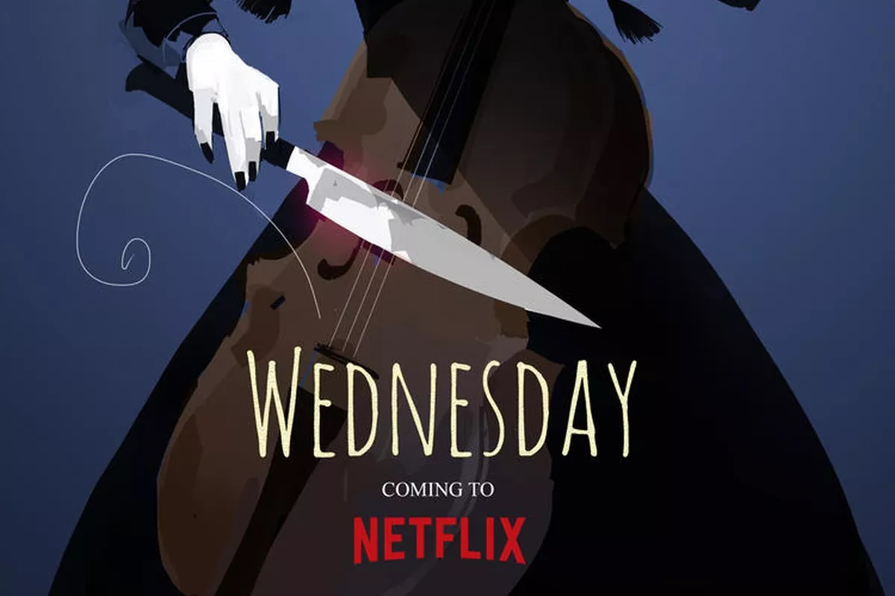

Peliculas que me gustan
- Iron Man
- Los Vengadores: Infinity War
- Black Panther
- Baby Driver
- Gran Torino
- Juego de Tronos
- Breaking Bad
- Peaky Blinders
- El Juego del Calamar
- Wednesday
PELICULAS
Los Vengadores
Los héroes más poderosos de la Tierra deben unirse y aprender a luchar en equipo si quieren evitar que Loki y su ejército alienígena esclavicen a la humanidad.

Black Panther
T'Challa, heredero al trono del escondido pero avanzado mundo de Wakanda, debe dar un paso al frente para guiar a su gente hacia un nuevo futuro y debe enfrentarse a un contendiente del pasado...

Baby Driver
Después de ser forzado a trabajar para un jefe del crimen organizado, un joven conductor de fuga se ve involucrado en un robo condenado al fracaso.

Gran Torino
Walt Kowalski, taciturno veterano de la guerra de Corea, intenta reformar a su vecino adolescente cuando este intenta robarle su posesión más preciada: un Gran Torino de 1972.

SERIES
Juego de Tronos
Nueve familias nobles luchan por el control de las tierras de Poniente, mientras que un antiguo enemigo regresa después de estar inactivo durante milenios.

Breaking Bad
Un profesor de instituto diagnosticado con cáncer de pulmón empieza a manufacturar y vender metamfetamina para asegurar el futuro de su familia.

Peaky Blinders
Una epopeya familiar de gánsteres ambientada en 1919 en Birmingham, Inglaterra; centrada en una pandilla que cosía cuchillas de afeitar a la visera de sus gorras, y en su feroz jefe Tommy Shelby

El Juego del Calamar
Cientos de jugadores con problemas de dinero aceptan una extraña invitación para competir en juegos infantiles. En el interior, un premio tentador espera con apuestas mortales. Un juego de supervivencia que tiene la friolera de 45.600 millones de premios ganados en juego.

Wednesday
Sigue los años de estudiante de Miércoles Addams, cuando intenta dominar su emergente habilidad psíquica, además de frustrar y resolver el misterio que enredó a sus padres.
